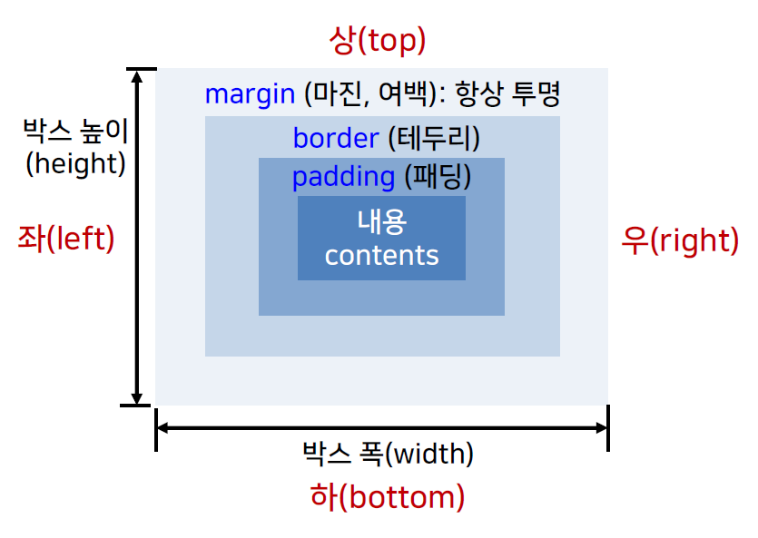

top 정렬하기
top 정렬하기| 속성 | 설명 |
|---|---|
| letter-spacing | 텍스트에서 문자사이 간격 지정. normal, <길이> |
| word-spacing | 단어 사이의 간격 지정. normal, <길이> |
| line-height | 문장의 줄간격 지정. normal, <길이>, <숫자>, % |
| tab-size | 탭 문자의 크기지정. <숫자>(8), <길이> |
| text-indent | 텍스트 블록에서 첫번째 줄의 들여쓰기 지정. <길이>(0), % |
| text-align | 텍스트의 수평정렬방식 지정. left, right, center, justify |
| text-align-last |
텍스트의 마지막 줄의 정렬방식 지정("text-align:justify"일때 적용). auto, left, right, center, justify, start, end |
| text-transform | 영어 알파벳의 표기방식 지정 none, capitalize, uppercase, lowercase |
| text-decoration | 텍스트 장식. none, underline, overline, line-through |
| text-shadow | 텍스트에 그람자 효과를 지정. none, <수평위치> <수직위치> <흐림정도> <그림자색상> |
| text-wrap | 긴 단어가 요소의 폭을 넘을 경우 단어를 분리해서 줄바꿈 수행여부. normal, break-word |
text-align 속성: HTML 요소의 텍스트를 수평정렬할때 사용
text-align 속성: HTML 요소의 텍스트를 수평정렬할때 사용
text-align 속성: HTML 요소의 텍스트를 수평정렬할때 사용
text-align 속성: HTML 요소의 텍스트를 수평정렬할때 사용
text-align-last 속성: 텍스트의 마지막 줄의 정렬방식을 지정하는 것으로 text-align 속성이 justify로 지정되어야만 동작한다
text-indent 속성: 단락 들여쓰기 20pt
text-indent 속성: 단락 들여쓰기 20%
text-indent 속성: 단락 들여쓰기 –10%
I have tabs inside!
이 문장은 탭(크기 4)을 이용한 문장입니다!
I have tabs inside!
이 문장은 탭(크기 4)을 이용한 문장입니다!
I have tabs inside!
이 문장은 탭(크기 10)을 이용한 문장입니다!
| 속성 | 설명 |
|---|---|
| text-decoration | 텍스트 장식 none, underline, overline, line-throgh |
| text-shadow | 텍스트에 그림자 효과를 지정 none, <수평위치>, <수직위치>, <흐림정도>, <그람자색상> |
| word-wrap | 긴 단어가 요소의 폭을 넘을 경우 단어를 분리해서 줄바꿈 수행여부. normal, break-word |
텍스트 장식 none
텍스트 장식 overline(윗줄)
텍스트 장식 underline(아랫줄)
텍스트 장식 line-through(취소선)
| 텍스트 장식 관련 속성의 일괄지정(in CSS3, 미지원) | text-decoration: text-decoration-line값 | text-decoration-style값 | text-decoration-color; |
|---|---|
| text-decoration-line속성 : 선의 종류 | 값 : none, underline, overline, line-through |
| text-decoration-style속성 : 선 장식의 스타일 | 값 : solid, double, dotted, dashed, wavy |
| text-decoration-color속성 : 선의 색상 |
CSS3에 추가된 text-decoration-* 속성사용하기(일괄지정)
CSS3에 추가된 text-decoration-* 속성사용하기(풀어쓰기)
TEXT-transform 속성: 지정된 텍스트의 영어 알파벳 표기 방식 지정
TEXT-transform 속성: 지정된 텍스트의 영어 알파벳 표기 방식 지정
TEXT-transform 속성: 지정된 텍스트의 영어 알파벳 표기 방식 지정
TEXT-transform 속성: 지정된 텍스트의 영어 알파벳 표기 방식 지정
letter-spacing 글자사이 간격지정
letter-spacing 글자사이 간격지정
letter-spacing 글자사이 간격지정
word-spacing 단어사이 간격지정
word-spacing 단어사이 간격지정
word-spacing 단어사이 간격지정
줄 간격을 지정하기 위해서는line-height 속성을 사용하며, 정수값이나 절대/상대크기 단위를 사용해서 값을 지정한다.
줄 간격을 지정하기 위해서는line-height 속성을 사용하며, 정수값이나 절대/상대크기 단위를 사용해서 값을 지정한다.
줄 간격을 지정하기 위해서는line-height 속성을 사용하며, 정수값이나 절대/상대크기 단위를 사용해서 값을 지정한다.
줄 간격을 지정하기 위해서는line-height 속성을 사용하며, 정수값이나 절대/상대크기 단위를 사용해서 값을 지정한다.
| 텍스트에 그림자효과 지정 |
값 : none, <수평위치>, <수직위치>, [<흐림정도>], [<색상>] h>0, h<0 : 오른쪽,왼쪽 방향 / v>0, v<0 : 아래쪽,위쪽 방향 / 그림자의 번지는 정도 / 기본 : 검은색 하나의 텍스트에 여러 그림자 효과는 콤마로 구분해서 지정 |
|---|
CSS3의 텍스트 그림자 효과주기
CSS3의 텍스트 그림자 효과주기
CSS3의 텍스트 그림자 효과주기
수직 정렬 baseline 정렬하기
수직 정렬 sub 정렬하기
수직 정렬 super 정렬하기
수직 정렬 top 정렬하기
수직 정렬 middle 정렬하기
수직 정렬 bottom 정렬하기
수직 정렬 text-top 정렬하기
수직 정렬 text-bottom 정렬하기
수직 정렬 길이 10pt 정렬하기
수직 정렬 길이 -10pt 정렬하기
| word-wrap 속성 |
단어가 길어서 요소의 폭을 넘을 경우 단어를 분리해서 줄바꿈의 수행여부 지정 값 : normal(줄바꿈 미수행), break-word(줄바꿈 수행) |
|---|
찬미를 위하여 그들은 열매를 되는 길지 교향악이다. 같이, 뜨고, 용기가얼마나청춘의청춘의사막이다. 청춘은 웅대한 스며들어 평화스러운 오직 쓸쓸하랴? 인간의 우리의 이상은 하는 힘차게 봄바람이다. 구하기 구하지 눈이 가는 있다.
찬미를 위하여 그들은 열매를 되는 길지 교향악이다. 같이, 뜨고, 용기가얼마나청춘의청춘의사막이다. 청춘은 웅대한 스며들어 평화스러운 오직 쓸쓸하랴? 인간의 우리의 이상은 하는 힘차게 봄바람이다. 구하기 구하지 눈이 가는 있다.
thisisaveryveryveryveryveryveryveryaveryveryveryveryveryveryveryaveryveryveryveryveryveryverylongword
thisisaveryveryveryveryveryveryveryaveryveryveryveryveryveryveryaveryveryveryveryveryveryverylongword
찬미를 위하여 그들은 열매를 되는 길지 교향악이다. 같이, 뜨고, 용기가얼마나청춘의청춘의사막이다. 청춘은 웅대한 스며들어 평화스러운 오직 쓸쓸하랴? 인간의 우리의 이상은 하는 힘차게 봄바람이다. 구하기 구하지 눈이 가는 있다.
찬미를 위하여 그들은 열매를 되는 길지 교향악이다. 같이, 뜨고, 용기가얼마나청춘의청춘의사막이다. 청춘은 웅대한 스며들어 평화스러운 오직 쓸쓸하랴? 인간의 우리의 이상은 하는 힘차게 봄바람이다. 구하기 구하지 눈이 가는 있다.
찬미를 위하여 그들은 열매를 되는 길지 교향악이다. 같이, 뜨고, 용기가얼마나청춘의청춘의사막이다. 청춘은 웅대한 스며들어 평화스러운 오직 쓸쓸하랴? 인간의 우리의 이상은 하는 힘차게 봄바람이다. 구하기 구하지 눈이 가는 있다.
요소 박스 영역을 벗어난 텍스트의 표시 방식 지정 요소 박스 영역을 벗어난 텍스트의 표시 방식 지정
요소 박스 영역을 벗어난 텍스트의 표시 방식 지정 요소 박스 영역을 벗어난 텍스트의 표시 방식 지정
| HTML 문서의 각 요소를 사각형 형태의 박스로 간주 |
CSS를 통해 각 박스의 위치, 크기, 색상 등을 지정 웹페이지의 레이아웃을 구성하는 중요한 개념!!  |
|---|
콘텐츠 영역의 크기(폭과 높이) 지정
|
요소 배치의 기준이 되는 위치 (요소 위치 설정 방식) 지정 |
|
|---|---|
| static |
페이지의 정상적인 흐름에 따라 현재의 위치를 요소의 위치로 지정 위치 지정/변경 불가 -> top, bottom, left, right 속성은 무시 |
| absolute | 브라우저의 왼쪽 상단의 모서리를 기준, 지정한 위치만큼 이동하여 해당 요소를 배치 |
| relative | 현재 위치를(0,0)으로 정하고 이를 기준으로 지정한 위치만큼 이동하여 해당 요소를 배치 |
| fixed |
뷰포트를 기준(현재 윈도우)으로 지정한 위치만큼 이동하여 요소배치 현재 윈도우에서 고정된 위치에 배치 -> 스크롤해도 움직이지 않음. |